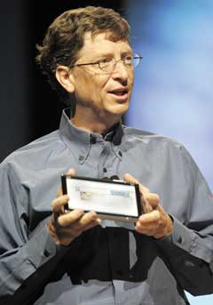
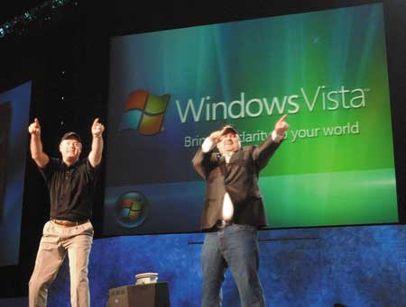
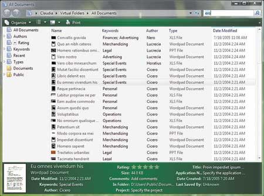
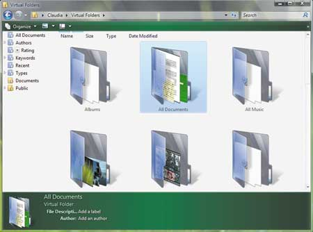

Андрей Колесов
Корпорация Microsoft (http://www.microsoft.com), ее модель бизнеса и технологии могут кому-то нравиться или не нравиться, но игнорировать ее ПО вряд ли возможно - в той или иной мере оно применяется практически во всех компьютерных системах. И даже ярым поклонникам идеологии open source, считающим компанию из Редмонда империей зла, все равно будет полезно знать, что творится в стане врагов.
В этой статье мы рассмотрим основные моменты в развитии технологий Microsoft в нынешнем году - хотя на момент подготовки материала до конца года оставался целый квартал, в общем-то, основные итоги уже можно подводить. Этот обзор не претендует на полноту представления всех событий; мы сделаем акцент на том, что может представлять практический интерес для отечественных специалистов - ПО для корпоративного рынка. Вне нашего внимания останется, например, весьма заметная активность Microsoft в области игровых продуктов, услуг MSN, телекоммуникаций, телевидения и т. п.
Первые три месяца года прошли без каких-либо особо заметных объявлений со стороны Microsoft. Активность компании резко повысилась в конце апреля - началась целая серия корпоративных мероприятий, сопровождавшихся представлением новых продуктов и планов на будущее.
Управление ИТ-ресурсами
Еще в 2003 г. Microsoft объявила о намерении развивать новое для себя направление - ПО для управления ИТ-ресурсами предприятий, представив концепцию Dynamic Systems Initiative (DSI). Тогда же компания начала формировать семейство соответствующих программных продуктов, но конкретные планы ее деятельности в этой сфере выглядели довольно расплывчато. Прошедший в середине апреля 2005 г. в Лас-Вегасе форум Microsoft Management Summit 2005 (MMS) внес ясность в эти вопросы; в числе прочего на нем были представлены перспективы развития линейки продуктов System Center и методологии Microsoft Operations Framework как важнейших компонентов стратегии DSI.
Текущее состояние решений Microsoft для управления ИТ-ресурсами и планы их развития мы недавно рассматривали в статье "Технологии Microsoft для управления ИТ-активами и ИТ-ресурсами" ("BYTE/Россия" № 8'2005), так что здесь мы поговорим только об одном новом продукте, выпущенном в конце нынешнего сентября.
Microsoft System Center Data Protection Manager (DPM), ранее известный под кодовым именем Data Protection Server, - это средство резервного копирования и восстановления (back & recovery) данных. Его бета-версия была объявлена в апреле, и тогда же на рынок были выпущены два сопутствующих решения: набор для разработчиков Volume Shadow Copy Services Writer SDK 1.0 for DPM, с помощью которого партнеры корпорации могли создавать ПО, расширяющее возможности DPM, и Microsoft Operations Manager 2005 (MOM) Pack for DPM для автоматизированного управления сервером.
Вообще говоря, встроенные средства резервного копирования уже давно входят в состав Windows Server 2000/2003, но для поддержки нужного уровня информационной безопасности в больших корпоративных системах этого явно недостаточно. Функционал DPM, впрочем, пока тоже выглядит довольно скромно на фоне решений старожилов этого сегмента ПО. В первую очередь нужно отметить, что DPM поддерживает работу только с дисковыми массивами. Отказ от использования ленточных накопителей Microsoft объясняет невысокой надежностью этих устройств и заметным падением интереса к ним со стороны заказчиков. Во-вторых, DPM предназначен пока только для работы с файл-серверными решениями на базе Windows Server 2003. Это также объясняется тем, что именно подобные данные чаще всего нуждаются в надежной защите.
Разумеется, говоря о нынешних возможностях DPM, нужно понимать, что для Microsoft это лишь стартовая площадка для нового направления. Уже сейчас корпорация объявила, что в будущем намерена обеспечить поддержку сохранения данных для всего семейства Windows Server System, в первую очередь в Exchange Server и SQL Server. Более того, вполне возможно, что будет реализована и работа в гетерогенной системе хранения данных. Но, как подчеркивают представители Microsoft, "это во многом зависит от пожеланий заказчиков".
Комментарии экспертов по поводу DPM демонстрируют большой разброс мнений. Кто-то выражает надежду, что появление Microsoft в данном сегменте ИТ-рынка усилит конкуренцию и плодотворно скажется на ценах и качестве продуктов. Кто-то отмечает, что упреки в надежности ленточной памяти очень сильно преувеличены. Но наиболее точная характеристика, наверное, была сформулирована в характерном отклике на появление нового продукта Microsoft: "Следуя давней традиции Microsoft, я подожду выхода версии 3.0". Впрочем, традиции Microsoft последних лет говорят о том, что наращивание возможностей ее продуктов происходит довольно быстро.
Microsoft Windows: вступая в третье десятилетие
Состоявшаяся в конце апреля в Сиэтле 14-я ежегодная конференция Microsoft Windows Hardware Engineering Conference (WinHEC) 2005 прошла под знаком важной вехи в развитии платформы Windows - ровно двадцать лет назад на выставке Condex впервые была публично представлена Windows 1.0 (продажи ее начались осенью того же года). Но о былых временах мы сейчас не будем вспоминать...
Главным событием конференции стал анонс выпуска новых 64-разрядных изданий серверной и клиентской ОС Microsoft - Windows Server 2003 x64 (в нескольких вариантах - Standard, Enterprise, Datacenter) и Windows XP Professional x64, предназначенных для работы на аппаратных платформах на базе процессоров Intel Xeon и Pentium 4 с поддержкой технологии Intel Extended Memory 64 (EM64T), а также процессоров AMD Opteron и Athlon 64. Напомним, что данная архитектура, в отличие от процессоров Itanium, не является полностью 64-разрядной, основной акцент в ней сделан на поддержку расширенной адресации памяти, а собственно вычисления выполняются на 32-разрядном ядре процессора, дополненном некоторыми 64-разрядными возможностями обработки. Однако именно этот подход дает возможность эффективно использовать такие компьютеры для работы как с новыми 64-разрядными, так и с традиционными 32-разрядными приложениями.
Принимая во внимание приемлемую стоимость таких систем, получается, что именно Windows x64 может положить начало широкому применению 64-разрядных вычислений на массовом рынке. В частности, Windows XP Professional x64 позволяет теперь работать на рабочих станциях с физическим объемом ОЗУ до 128 Гбайт и использовать до 16 Тбайт виртуальной памяти. Такое увеличение доступных ресурсов (в 32 и в 1000 раз соответственно по сравнению с 32-разрядной клиентской ОС) по достоинству оценят пользователи, работающие в таких областях, как инженерные и научные расчеты, САПР, разработка игр, создание мультимедийного контента.
Как заявил Билл Гейтс, новые версии Windows x64 будут формировать основное направление повышения вычислительной мощности серверной и клиентской платформ Microsoft до конца 2006 г., когда им на смену должна подойти Longhorn - ОС нового поколения.
Новые мобильные технологии
Не было забыто на конференции WinHEC и мобильное направление Windows. На этот раз основное внимание на ней уделялось достижениям производителей новых моделей Tablet PC, которые смогли реализовать как новые наборы функций в этих устройствах, так и возможности их миниатюризации (рис. 1).
|  | Рис. 1. Билл Гейтс с прототипом "ультрамобильного" семидюймового Tablet PC на конференции WinHEC 2005.
|
Месяцем позже, 10 мая, в Лас-Вегасе на конференции Microsoft Mobile & Embedded DevCon 2005 корпорация объявила о запуске в производство новой версии ОС для мобильных устройств - Windows Mobile 5.0. О ней и сопутствующих технологиях мы уже подобно рассказывали ("Технологии Microsoft для мобильных систем", "BYTE/Россия" № 10'2005). Так что здесь только сообщим еще об одном, весьма знаменательном событии, произошедшем в последние дни сентября: Microsoft и ее главный конкурент в этой сфере, компания Palm, объявили о стратегическом альянсе с целью ускорения развития рынка смартфонов. Главный пункт этого соглашения: Palm получила лицензию на Windows Mobile для использования ее в своей линейке Treo Smartphones.
Надвигается двенадцатый вал Microsoft Office
В середине мая в Редмонде прошла десятая ежегодная конференция Microsoft CEO Summit, собравшая более ста руководителей крупнейших компаний мира. Помимо обсуждения многих других тем, именно здесь корпорация представила первые предварительные сведения о следующем поколении своих офисных продуктов, которые пока обозначены кодовым названием Office 12.
Основные направления развития этого семейства определены следующим образом: обеспечение коммуникации и сотрудничества в унифицированной клиентской среде, возможность поиска и выборки нужных сведений из огромных объемов входящей и внешней информации, широкое использование визуальных методов обработки и анализа данных. С точки зрения общего управления бизнес-процессами предприятий очень важно, что Office 12 будет построен на базе стандартизованной интегрированной архитектуры, которая позволит более эффективно управлять полным жизненным циклом документов и контента, в том числе на базе открытых XML-стандартов. Существенно обновиться должны также средства быстрой разработки.
Более конкретные сведения о будущем семействе Office 12 тогда не прозвучали, но анализ данных по этой тематике за последние пару лет (после выхода Microsoft Office 2003) позволяет довольно четко представить себе, что нас ожидает в ближайшей перспективе.
Общая тенденция развития семейства Microsoft Office состоит в усилении в нем серверной составляющей. За последние четыре года мы стали свидетелями повышения роли технологий SharePoint (в виде служб SharePoint Services в составе Windows Server и отдельного решения SharePoint Portal Server) как основы поддержки коллективной работы с документами. Теперь же серверная "половина" Office будет усилена за счет комплекса средств сотрудничества в реальном масштабе времени. В первую очередь имеются в виду сервер Office Live Communications Server 2005, клиентское приложение Office Communicator 2005 и служба Web-конференций Office Live Meeting 2005 (эти решения были представлены в конце 2004-го и начале 2005 г.).
Другое направление связано с повышением мобильности офисных решений. С одной стороны, это подразумевает расширение числа и функциональности приложений, включенных в состав новой версии Windows Mobile 5.0, а с другой - повышение эффективности синхронизации данных при работе конкретного пользователя с различными клиентскими устройствами (тут в первую очередь подразумевается работа с электронной почтой и персональной информацией через Outlook).
Разумеется, не будут забыты и ветераны офисного движения - Word, Excel и т. п. Как стало известно позднее, особое внимание в них будет уделено повышению удобства пользовательского интерфейса. Действительно, одна из проблем этих продуктов - их чересчур развитая функциональность: большинство пользователей даже не подозревают о существовании в приложениях нужных им функций.
И все же ключевые новшества клиентских приложений будут связаны с применением новых аппаратных форм-факторов, в первую очередь Tablet PC. Соответственно особое внимание будет уделяться таким качественно новым решениям, как OneNote (см. "OneNote: управление персональной информацией", "BYTE/Россия" № 3'2005).
Будет расширяться спектр средств специализированного делового назначения. В последние годы мы наблюдаем постоянное расширение функциональности менеджера деловых контактов Business Contact Manager. Очень перспективным представляется появившийся два года назад продукт InfoPath для обработки структурированных данных из различных источников информации.
Это же направление представляет новый продукт Business Scorecаrd Manager 2005 (кодовое название Maestro), который появится на рынке в ноябре. С помощью этого решения будет легче оценивать эффективность работы информационных систем с точки зрения общего бизнеса компании, используя методы "таблицы кадров" (scorecards, получение последовательных "снимков" состояния системы) и анализа ключевых параметров производительности (KPI, key performance indicators).
В сентябре Microsoft объявила о выпуске еще одного нового офисного приложения - Microsoft Office Small Business Accounting 2006. Это ПО предназначено для фирм с численностью персонала до нескольких десятков человек, в которых бухгалтерским и налоговым учетом занимаются один-два финансовых специалиста. Пока этот продукт предназначен только для США и Канады, но самое его появление весьма симптоматично.
Конкретный состав и набор функций будущего Office 12 пока выглядят несколько расплывчато, но скоро все прояснится - первая бета-версия пакета ожидается нынешней осенью, а выпуск окончательного варианта - во второй половине 2006 г.
Visual Studio 2005 и SQL Server 2005
Особое значение этих двух продуктов в общем комплексе ПО Microsoft не нуждается в пояснениях. На протяжении последних двух лет корпорация выдавала дозированную информацию о будущих новшествах этих средств, выпускала предварительные и бета-версии - и постоянно отодвигала сроки их окончательного выпуска.
Ситуация прояснилась на прошедшей в начале июня в Орландо 13-й ежегодной конференции Microsoft TechEd'2005: Visual Studio 2005 (включая .NET Framework 2.0), Microsoft SQL 2005, а также новая версия ключевого интеграционного решения Microsoft BizTalk Server 2006 будут официально представлены 7 ноября 2005 г. Детальное обсуждение этих двух продуктов, наверное, лучше будет провести уже после их выпуска (который состоится до выхода в свет данной статьи). Сейчас же ограничимся некоторыми комментариями.
Visual Studio 2005 будет поставляться в следующих вариантах:
- VS 2005 Team System - высокопроизводительный, интегрированный, расширяемый набор средств поддержки полного жизненного цикла командной разработки и поддержки приложений корпоративного уровня;
- VS 2005 Professional Edition - мощный инструмент для профессиональных разработчиков, работающих в одиночку или в небольших группах;
- VS 2005 Standard Edition - гибкий инструмент для создания Windows-, Web- и мобильных приложений;
- VS 2005 Tools for the Microsoft Office System - средство для профессиональной разработки решений на базе приложений Office System - Excel, Word и InfoPath;
- VS 2005 Express - будет включать Visual Web Developer 2005 Express Edition (простой инструмент для создания динамических Web-сайтов и Web-сервисов) и Visual Basic 2005 Express Edition, Visual C# 2005 Express Edition, Visual C++ 2005 Express Edition и Visual J# 2005 Express Edition - упрощенные варианты средств для создания Windows-приложения начинающими программистами.
Безусловно, сильной стороной инструментальных средств Microsoft является то, что Visual Studio представляет собой единую платформу разработки для самого широкого круга приложений (мобильных, настольных, серверных) и столь же широкого круга программистов (от начинающих до бизнес-аналитиков и команд профессионалов). В конкурирующих же продуктах (в том числе из стана Java) все инструменты отличаются большей специализацией.
Основная тенденция развития VS2005 - это быстрое продвижение в сторону создания полноценного комплекса для всех этапов разработки ПО (моделирование, управление требованиями, тестирование и т. п.) с использованием ролевой модели управления командой разработчиков. Раньше для решения этих задач требовались продукты третьих фирм (Rational, Borland), теперь Visual Studio Team System будет их решать самостоятельно, и поставляться он будет также в виде линейки продуктов Team Editions - для архитекторов, для разработчиков и для тестеров. В их состав войдет также полный комплект Visual Studio Team Suite, который, кроме трех ролевых вариантов, будет включать новый сервер Visual Studio Team Foundation Server, предназначенный для более эффективной поддержки групповой работы в команде.
SQL Server 2005 выйдет в четырех редакциях, коротко охарактеризованных ниже.
Enterprise Edition - самый полный и наиболее масштабируемый вариант платформы, предназначенный для работы с большими критически важными для бизнеса приложениями. Эта версия в виде издания Developer будет также доступна разработчикам для создания и тестирования приложения на базе SQL Server.
Standard Edition - полнофункциональное решение, ориентированное на организации среднего размера и включающее в числе прочего службы SQL Server Integration Services, SQL Server Analysis Services и SQL Server Reporting Services. В нем будут доступны некоторые возможности, ранее присутствовавшие только в версии SQL Server 2000 Enterprise Edition. В частности, будет реализована поддержка 64-разрядных систем (x64 и Itanium). SQL Server 2005 Standard Edition сможет работать на четырехпроцессорных аппаратных конфигурациях с практически неограниченным размером базы данных и системной памяти.
Workgroup Edition - простая в использовании и управлении СУБД для малых и средних предприятий. В ее составе отсутствуют средства анализа данных и формирования отчетов. Будут поддерживаться двухпроцессорные компьютеры, неограниченный размер БД и до 2 Гбайт оперативной памяти.
Express Edition - бесплатный вариант механизма управления данными для встроенного применения в приложениях, в том числе третьих фирм. Он пришел на смену решению Microsoft Data Engine (MSDE) для SQL Server 2000. Данный продукт можно будет свободно скачать с сайта корпорации. В эту версию войдут визуальный инструмент управления, мастера и элементы управления для построения отчетов, функции репликации, клиент SQL Service Broker, средства шифрования данных, а также поддержка Common Language Runtime (CLR) и XML.
Выпуск SQL Server 2005 должен закрепить очень серьезные позиции СУБД Microsoft на корпоративном рынке. По данным Gartner, за 2004 г. тройка лидеров на рынке СУБД выглядит в денежном выражении так: IBM (34,1%), Oracle (33,7%) и Microsoft (20%). А вот в штучном выражении Microsoft уже давно впереди, ее доля приближается к 50%. Кратко основные тенденции в SQL Server 2005 можно охарактеризовать так - это повышение масштабирования, производительности, надежности. С точки зрения функционала - формирование полноценного комплекса бизнес-аналитики и отчетности, расширенная поддержка XML. С технологической стороны - поддержка среды исполнения .NET Framework и глубокая интеграция с Visual Studio 2005.
Кстати, создавая новые инструменты, Microsoft не забывает и "ветеранов движения": в начале 2005 г. корпорация выпустила очередную версию своего старейшего инструмента - Visual FoxPro 9.0, которая, по мнению экспертов, стала самым существенным обновлением данной системы со времен перехода от варианта DOS к Windows (от версии VFP 2.6 к 3.0). FoxPro присутствует на рынке уже более 15 лет и почти на 10 лет пережил своих грозных конкурентов из стана xBasе и слухи о его собственной скорой смерти. Выпуск VFP 9 вызвал заметный энтузиазм в среде сообщества его пользователей и разработчиков, которое сохраняет преданность этому средству разработки и верит в его способность решать самый широкий круг задач.
Ну, вирусы, берегитесь!
21 июня Microsoft сообщила о завершении процесса покупки компании Sybari Software (http://www.sybari.com), одного из ведущих поставщиков средств обеспечения безопасности. К моменту покупки технологии Sybari применяли 10 млн пользователей на более чем десяти тысячах предприятий по всему миру (в том числе 20% из списка Fortune 500) для защиты от вирусов и спама систем обмена сообщениями и групповой работы. Отличительная особенность этих средств - объединение нескольких антивирусных "движков" (других производителей) в едином решении. Хотя Sybari уже давно сотрудничала с Microsoft (в мае прошлого года корпорация выбрала средства Sybari для защиты собственной ИТ-инфраструктуры) и ее технологии хорошо интегрированы с семейством Windows Server, тем не менее линейка продуктов Sybari поддерживает и другие платформы, в частности, IBM Lotus Notes.
По единодушным оценкам экспертов, данная сделка должна существенно усилить позиции Microsoft на рынке решений для защиты корпоративных и домашних систем от вредоносного ПО и может привести к существенным структурным изменениям в данном сегменте, так как многим поставщикам придется скорректировать свою бизнес-стратегию в новых условиях.
Напомним, что за полтора года до покупки Sybari корпорация Microsoft уже сделала ряд приобретений в этой сфере и в начале 2005 г. выпустила бета-версию первого продукта для защиты от шпионского ПО под собственной торговой маркой - Microsoft AntiSpyware. Параллельно с технологическими усилиями Microsoft за последние два года (и особенно в первой половине текущего) резко активизировала деятельность на юридическом фронте, добиваясь принятия законодательных актов, касающихся борьбы с созданием и распространением антивирусного ПО.
Microsoft и open source
Если провести опрос среди ИТ-общественности с просьбой назвать главных противников концепции Open Source Software (OSS), то можно уверенно предсказать, что Microsoft окажется во главе этого списка, причем с долей голосов, очень близкой к 100%. И скорее всего, так оно и есть на самом деле. Однако в стратегии противоборства корпорации из Редмонда с сообществом открытых кодов за последние пару лет произошли важные изменения, которые, обращаясь к недавнему мировому прошлому, можно сравнить с переходом от "холодной войны" к политике "разрядки".
Одно только имя Microsoft вызывает негодование среди участников таких мероприятий, как конференция LinuxWorld. И тем не менее корпорация приняла участие в LinuxWorld'2005, проходившей в середине августа в Сан-Франциско. На конференции ее представлял директор направления Platform Technology Strategy Билл Хилф (Bill Hilf), который входит в число ветеранов OSS-отрасли. До перехода в Microsoft в январе 2004 г. он работал в IBM старшим архитектором корпоративных систем, занимаясь в том числе разработкой стратегии продвижения Linux.
На конференции г-н Хилф провел специальную секцию под названием Managing Linux in a Mixed Environment ... at Microsoft? ("Управление Linux в гетерогенной среде... под управлением Microsoft?"), основной акцент в которой был сделан на теме "наведения мостов". Чтобы изначально разрядить возможную негативную реакцию слушателей, топ-менеджер Microsoft выбрал для своей презентации полушутливый стиль и предстал перед аудиторией в "прикольном" двухцветном пиджаке. Одним из лейтмотивов выступления Билла Хилфа был тезис о том, что взаимоотношения Microsoft с OSS не нужно представлять исключительно в черно-белом цвете. На практике большинство заказчиков работает в гетерогенных вычислительных средах, и поставщики ПО просто не могут игнорировать этот факт.
Руководимая г-ном Хилфом Linux/OSS Lab занимается анализом, тестированием и замерами производительности OSS-продуктов, ориентируясь в первую очередь на решение задач интероперабельности Linux/OSS с технологиями Microsoft. В ней используется несколько сотен серверов и большой набор ПК, работающих совместно под управлением разнообразных дистрибутивов Linux (свыше сорока), а также многих версий Unix. Все эти системы исследуются на совместимость с сетевыми, почтовыми и различными другими решениями, реализованными в среде Windows. Linux/OSS Lab выполняет также функции центра компетенции внутри самой Microsoft.
Кроме сугубо технических задач, это подразделение решает еще и целый ряд социологических вопросов, связанных с изучением модели разработки в OSS-сообществе, понимания происходящих в нем процессов, с поддержкой контактов между Microsoft и представителями OSS. Действительно, ведь главное достижение движения open source - не сама по себе публикация исходных кодов, а демонстрация на практике возможности преобразования процесса разработки в широкий общественный процесс. И мы видим, что все ведущие производители ПО идут как раз по пути привлечения независимых разработчиков к созданию своих коммерческих продуктов.
Разумеется, после выступления Биллу Хилфу задавали и вопросы по поводу его перехода "в стан врага". Вот любопытная выдержка из его ответа на эти упреки: "До перехода в Microsoft я работал в IBM. Мне нравится IBM - это великая компания. Но она занимается продажами и управляется менеджерами по продажам. Многие смотрят на Microsoft очень поверхностно, видя в ней лишь компанию, которая зарабатывает много денег и продает закрытое ПО. На самом деле это технологическая компания, в которой работает много разработчиков и которая такими разработчиками управляется. С технологической точки зрения это место работы для меня оказалось очень интересным".
Говоря об использовании технологического опыта OSS, нужно также отметить адаптацию популярных в этом сообществе языков программирования для платформы .NET. Речь, в частности, идет о Perl и Python. Последний относится к быстро набирающей в последние годы популярность категории динамических языков программирования, позволяющих вносить изменения в структуру программы (например, добавлять и удалять функции, классы и модули), не прерывая процесса ее выполнения. Еще в начале 2004 г. была создана версия IronPython на базе Common Language Runtime, как для Microsoft .NET, так и для платформы Mono. Эта работа выполняется в Microsoft в рамках создания Longhorn.
В свою очередь, и OSS-разработчики проявляют определенный интерес к .NET. Об этом свидетельствует проект Mono (http://www.mono-project.com), цель которого - создание средств для переноса приложений на основе Windows Forms в среду Linux.
Microsoft Dynamics вместо MBS
В начале сентября в кампусе Microsoft в Редмонде прошла первая конференция Microsoft Business Summit, где была представлена стратегия корпорации в сфере среднего бизнеса с ориентацией на создание интегрированного комплекса ПО, включающего бизнес-приложения, серверную инфраструктуру и офисные пакеты.
В первую очередь Microsoft анонсировала на ней новый брэнд - Microsoft Dynamics, который теперь будет использоваться для всех решений, известных под названием Microsoft Business Solutions. Имя Dynamics получит продуктовая линейка бизнес-приложений нового поколения (до сих пор известная под кодовым именем Project Green), разработка которой близится к завершению. Microsoft Dynamics представляет собой технологическую платформу, включающую около 50 базовых ролевых функций и интегрированную со всеми основными продуктами Microsoft, в первую очередь с пакетом Office, SharePoint Portal Server и SQL Server Reporting Services.
Обновленные версии существующих решений MBS также будут выпускаться под новыми именами. Так, в этом году будут представлены модернизированные продукты Microsoft Dynamics GP (бывший Great Plains) и Microsoft Dynamics CRM (ранее Microsoft CRM), а в 2006 г. - Microsoft Dynamics AX (Axapta), Microsoft Dynamics NAV (Navision) и Microsoft Dynamics SL (Solomon). В то же время другие деловые приложения сохранят свои нынешние имена - Microsoft Point of Sale, Microsoft Retail Management System, Microsoft FRx и Microsoft C5. Новые релизы уже имеющихся бизнес-продуктов, которые появятся до конца 2006 г., составят "первую волну" линейки Microsoft Dynamics. "Вторая волна", реализованная полностью в архитектуре Project Green, будет выпущена ориентировочно в 2008 г.
Из этой информации можно сделать вывод, что в Microsoft решили не форсировать создание нового поколения платформы для деловых приложений. Тут можно вспомнить, что еще в 2003 г. корпорация демонстрировала на своих технических мероприятиях прототип будущей среды разработки и исполнения бизнес-решений Microsoft Business Framework, реализованной, в свою очередь, на базе .NET Framework. Тогда же было сказано, что появления рабочего релиза MBF следует ожидать в 2005 г., а спустя год выйдут первые приложения на ее основе. Теперь же все эти сроки смещаются. Очевидно, Microsoft решила поэтапно проводить интеграцию существующих бизнес-приложений со своим базовым ПО, унифицировать пользовательский интерфейс и набор реализуемых функций, а уже потом переводить их на новое технологическое ядро.
Ближайшие планы корпорации выглядят следующим образом. В ноябре в Москве будет представлена русская версия Navision 4.0 (английская появилась еще год назад). Осенью ожидается продукт Microsoft CRM 3.0, который придет на смену версии 1.2 (корпорация решила форсировать изменение номеров версий). Русский продукт обещают выдать спустя три-четыре месяца. В начале 2006 г. планируется выпуск английской Axapta 4.0.
На конференции было также озвучено намерение создать новое серверное инфраструктурное решение, представленное под кодовым именем Windows Server Centro. Оно будет базироваться на будущей версии серверной ОС Windows Server Longhorn (ожидается в 2007 г.), в него войдут также Microsoft Exchange, специальные технологии обеспечения безопасности и средства управления ИТ-инфраструктурой.
Клиентская Longhorn получила имя
21 июня на проходившей в Атланте конференции Microsoft Global Business было объявлено, что следующая версия клиентской ОС, ранее известной под кодовым названием Longhorn, отныне официально носит имя Windows Vista (рис. 2). Ее первая бета-версия доступна с 3 августа для нескольких десятков тысяч ИТ-специалистов - участников программ Windows Vista Technical Beta, Microsoft Developer Network и Microsoft TechNet (http://www.microsoft.com/windowsvista).
|  |
| Рис. 2. Так проходило объявление Windows Vista в Атланте: Бриан Валентайн, старший вице-президент Microsoft и начальник подразделения Windows Core Operating System (слева), и Кевин Джонсон, вице-президент, руководитель мировой службы продаж.
|
Напомним, что впервые прототип (Technical Preview) Longhorn был представлен сообществу независимых разработчиков ПО в октябре 2003 г. (см. "Нас ждут Longhorn, Yukon и Whidbey... и многое другое", "BYTE/Россия" № 1'2004), и хотя в нем были реализованы лишь отдельные компоненты будущей ОС, уже тогда стало понятно, что речь идет о достаточно радикальном обновлении внутренней архитектуры системы. В частности, должна произойти замена внутренней программной модели API - с нынешней Win32 на новую WinFX, которая включает четыре ключевых компонента: Fundamentals (базовый, реализует функции ядра ОС), Presentation (визуализация - пользовательский интерфейс, представление документов, данных, мультимедиа; кодовое название Avalon), Communication (коммуникации на базе Web Services; Indigo), Data (управление данными и файлами, WinFS).
Год назад Microsoft объявила, что первая клиентская версия Longhorn появится в 2006 г., однако новый вариант системы управления файлами WinFS будет доступен в ней лишь на уровне бета-тестирования. В полном объеме технологиями Longhorn можно будет воспользоваться лишь в 2007 г., когда появится серверная версия ОС. Вместе с тем новая программная модель Windows WinFX Developer Platform будет поставляться не только в составе новой ОС, но также в виде автономного набора для Windows XP и Windows Server 2003.
С точки зрения практического применения новшества Windows Vista должны проявиться в трех основных направлениях.
Конфиденциальность и надежность хранения данных. Интегрированные антивирусные функции помогут защитить пользователей от различного вредоносного и нежелательного ПО. Функция защиты учетной записи пользователя (User Account Protection, UAP) снизит уровень опасности для компьютерных систем, не влияя при этом на производительность работы. Усовершенствованные технологии защиты данных, в том числе использование методов шифрования и аппаратных ключей, исключат доступ к хранимой информации любых посторонних лиц, даже в случае кражи мобильного ПК.
Простота и удобство управления информацией. Новые инструменты управления информацией позволят просматривать и организовывать файлы так, как захотят сами пользователи (рис. 3). "Живые иконки" покажут эскиз первой страницы существующего документа, а не значок типа файла. Windows Vista проводит фильтрацию и индексацию метаданных документа, так что виртуальные папки могут автоматически пополняться документами, имеющими соответствующие свойства. Будут также существенно улучшены средства поиска информации на компьютере. Применение открытых стандартов (XML, XAML, ZIP) решит проблему обработки документов в различных устройствах и приложениях.
|  |
|  |
| Рис. 3. В Windows Vista значки папок и иконок автоматически отображают реальное содержание и состояние соответствующих файлов. Работа с документами организована с помощью метаданных, в терминах авторов, тем, ключевых слов.
|
Коммуникации и связь. Новые средства обеспечат обновление и синхронизацию информации сразу на всех ПК, файловых серверах и других устройствах, таких, как мобильные телефоны и карманные компьютеры.
В первой бета-версии Windows Vista получили официальные названия и два ключевых ее компонента. Так, Avalon теперь называется Windows Presentation Foundation. Эта интегрированная графическая подсистема отвечает за создание, отображение и дальнейшее использование документов, медиа-файлов, а также элементов пользовательского интерфейса с различными ни на что не похожими эффектами, которые позволят улучшить взаимодействие с пользователем. Indigo получила название Windows Communication Foundation. Данный функциональный слой ОС отвечает за взаимодействие ОС с различными приложениями, организуя общее управление процессом создания распределенных систем и взаимодействия компонентов по сети посредством протоколов Web-сервисов.
Одновременно с Windows Vista Beta 1 корпорация Microsoft представила полную первую бета-версию WinFX Runtime Components, включающую наборы Windows Presentation Foundation (Avalon), Windows Communication Foundation и InfoCard для Windows XP и Windows Server 2003. Кроме того, объявлено о выпуске закрытой бета-версии будущего Windows Server, который пока еще проходит под кодовым именем Longhorn. Она доступна только ограниченному числу участников Technical Beta Program - разработчикам аппаратных и программных средств.
PDC'2005: перспективы развития технологий
Конференции серии Microsoft Professional Developer проходят раз в два года в Лос-Анджелесе, обычно в конце октября. Но в этом году в ноябре в Сан-Франциско состоится специальная масштабная презентация новых версий ключевых инструментов Microsoft (SQL Server 2005 и Visual Studio 2005), поэтому PDC'2005 была перенесена на середину сентября.
Традиционно на PDC рассматриваются стратегические перспективы развития технологий Microsoft. Судя по всему, главные планы корпорации на ближайшие два года связываются с ожидаемым появлением в конце 2006 г. новых продуктов для настольных ПК - клиентской ОС Windows Vista и офисного пакета Office. На PDC'2005 был также впервые представлен ряд других новых проектов Microsoft.
Планы корпорации включают создание базовой среды разработки и исполнения клиентских Web-приложений (она получила кодовое название Atlas) с использованием подхода Asynchronous JavaScript & XML (AJAX). Atlas будет интегрирована с Visual Studio 2005 и ASP.NET 2.0 и позволит создавать функционально насыщенные интерактивные Web-решения, которые могут выполняться при помощи любого браузера.
Будет также создан Language Integrated Query (LINQ) - специальный язык для .NET Framework, который должен упростить работу с данными. LINQ представляет собой единый набор расширений для C# и Visual Basic, использующий унифицированную программную модель для построения интегрированных запросов к объектам, базам данных и XML-структурам.
Одно из ключевых новшеств Windows Vista - использование слоя Windows Presentation Foundation (WPF), отвечающего за пользовательский интерфейс и визуализацию данных. Microsoft планирует создать отдельный компонент WPF Everywhere, который можно будет применять на широком круге платформ и на устройствах различного форм-фактора.
На PDC'2005 впервые было объявлено о намерении представить Windows Workflow Foundation (WWF) - комплект, включающий механизм исполнения Workflow, программную модель и набор инструментов и предназначенный для разработки приложений для управления потоками работ. По замыслу авторов проекта, он обеспечит технологическое взаимодействие людей и программных решений. Базовые функции WWF будут доступны через WinFX (набор Win API нового поколения Longhorn), в том числе и в Windows Vista. В будущем WWF будет включен в следующие версии ключевых продуктов корпорации: Office, BizTalk Server, SharePoint Server и Microsoft Dynamics (MBS). Первая бета-версия WWF уже доступна на сайте Microsoft.
Чтобы облегчить проектирование пользовательского интерфейса для новых версий Web и Windows-платформ, Microsoft приступила к созданию нового комплекта инструментария, получившего название Microsoft Expression. Некоторые средства уже были продемонстрированы на конференции - это Acrylic Graphic Designer (работа с графическими данными), Sparkle Interactive Designer (проектирование Windows-интерфейса) и Quartz Web Designer (создание Web-сайтов).
Microsoft реорганизуется
Завершим обзор последней важной новостью, объявленной в конце сентября. Она относится к вопросам бизнеса Microsoft, но по сути отражает как раз перспективы развития ее технологий.
До сих пор бизнес Microsoft подразделялся на семь направлений. Теперь эти направления объединяются в три группы, каждую из которых будет возглавлять руководитель в статусе президента отделения. Комментируя это решение в открытом письме сотрудникам корпорации, CEO Microsoft Стив Балмер отметил, в частности, что реорганизация в целом отражает определенные изменения в стратегии бизнеса компании, в том числе смещение ее интересов в сторону сервис-ориентированного ПО.
Microsoft Platform Products & Services Division объединит бывшие направления Windows Client, Server & Tools и MSN, на долю которых по итогам 2005 финансового года пришелся 61% доходов корпорации. Такое слияние настольных систем Windows и серверных продуктов является вполне логичным шагом, а подключение к ним онлайновых Интернет-служб говорит лишь о том, что сфера предоставления услуг пользователям будет играть все более значимую роль в бизнесе Microsoft. В состав Microsoft Business Division войдут направления Information Worker (настольные приложения) и Microsoft Business Solutions (MBS), что также вполне логично. Microsoft Entertainment & Devices Division объединит ранее существовавшие Home & Entertainment Division и Mobile & Embedded Devices Division.
Тут стоит вспомнить, что с конца 90-х годов, после начала серии судебных антимонопольных дел против Microsoft, в кругах ИТ-общественности регулярно обсуждается тема возможного разделения корпорации на несколько самостоятельных компаний. Года четыре назад был даже момент, когда такой вариант казался вполне вероятным, но Microsoft все же сохранила целостность бизнеса. Тем не менее расширение присутствия на рынке объективно требует предоставления более высокой самостоятельности различным подразделениям корпорации, и объявленная реорганизация представляет собой шаг именно в этом направлении.